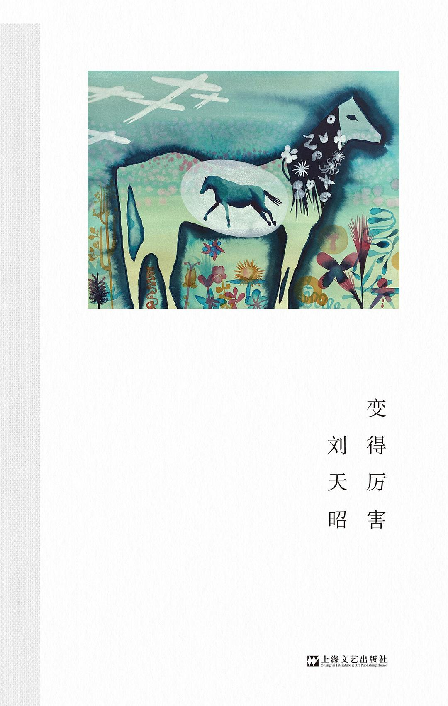

《变得厉害》

8.2
★★★★☆
豆瓣评分 · 3,410 人评价
未标记阅读状态
作家刘天昭的敏锐内省随笔集，以手术刀般精准的诚实笔触，解构现代都市青年的自恋、虚荣、写作焦虑与对“厉害”的执念，呈现一个女性在日常琐屑中重获内在秩序与自足的心路历程。
总体观点
现代社会灌输给我们的'变得厉害'的焦虑，本质上是一种被外部评价体系绑架的虚妄自恋，它诱惑我们为了赢得看客的掌声而不断透支真实感受，最终落入空虚与自我厌弃的陷阱。
写作与生活不是为了向外界证明什么，而是为了借由文字的细密梳理看清自己的局限与诚实。唯有敢于直面平庸、承认软弱，人才能摆脱扮演'天才'或'赢家'的精神苦役。
真正的强大不是所向披靡的世俗成功，而是在日常生活的买菜、做饭、散步与独处中，建立起不依赖任何掌声与证明的内在安宁与自主节奏。
核心观点
-
1. 虚荣与自省：解剖对厉害的自恋执念
总想显得比别人高明一点，本质上是无法忍受自己在人群中只是一个普通人的事实，觉察炫耀心是重获平静的第一步。
剖析在社交网络上发出机智俏皮话后频繁刷新点赞数的饥渴心态，以及随后产生的虚脱与自厌。 -
2. 文字的诚实窄门：拒绝一切涂脂抹粉
骗别人容易，骗自己更顺手，但只要在纸上写下一句哪怕微小的假话，整篇文字的神魂就立刻死掉了。
在私人笔记中毫不避讳地写下自己的狭隘、嫉妒与难堪，在不加粉饰的文字中与真实的自己对话。 -
3. 日常劳作的治愈力：具身生活击溃虚无内耗
洗干净一颗白菜、把房间地板擦得反光，这些切实摸得到质感的劳作，比在脑子里空转的宏大哲学可靠得多。
当陷入认知瘫痪与写作瓶颈时，离开书桌去淘米煮饭揉面团，在物理实物的触感中重启精神能量。 -
4. 承认平庸的解放：卸下成为旷世奇才的重担
当我终于彻底承认自己这辈子成不了什么旷世奇才时，肩膀上那副沉重虚妄的枷锁才轰然落地，重获自由呼吸。
对比名利场上觥筹交错但眼神游移的朋友，胡同口安详修自行车的老师傅反而拥有更笃定的生命力量。 -
5. 无伪装的亲密关系：倦鸟各自打盹的默契
好的关系不是两个精致瓷器互相炫耀釉色，而是两只疲惫的鸟可以在同一个屋檐下各自沉默打盹而互不尴尬。
记录在亲情与友谊中放下扮演'永远正确懂事'的包袱，真实展现疲倦反而带来更深层的接纳与松弛。
树状思维导图
全书思维导图 · 知识脉络树
已复制思维导图大纲到剪贴板！
全书结构
-
辑一 日常的重量：从清晨的焦虑到写字台的静谧
记录自由职业写作者在每个清晨面临的无序感，以及如何在日常琐务中逐步建立晨间作息与专注场域。
描写作者在早起煮咖啡时与脑海中翻腾的自我否定搏斗，最终凭借磨豆机的咔哒声拉回当下的细微瞬间。 -
辑二 渴望被看见：自恋、虚荣与自省的漫长搏斗
解剖社交媒体时代年轻人无处安放的表现欲，深入反思文人圈子里争风吃醋与互相窥探的心态病理。
剖析在微博上发出一段机智俏皮话后频繁刷新点赞数的饥渴心态，以及随后产生的羞耻与虚脱感。 -
辑三 关系的镜像：在亲密与疏离之间确认边界
探讨亲情、伴侣与友谊中的权利消长，如何在深爱对方的同时保持清晰独立的精神疆界与自我尊严。
记录与母亲在电话中关于婚姻催促的交锋，由愤怒到理解母亲背后一代人的时代局限与孤独恐惧。 -
辑四 所谓厉害：解构世俗成功学与重获内在定力
剖析当代精英语境中对出人头地与大展宏图的规训，反思为何许多看似厉害的人内心脆弱不堪。
对比名利场上觥筹交错但眼神游移的朋友，与胡同口安详修自行车的老师傅身上的笃定力量。 -
辑五 自由的代价：直面孤独并学会在真实世界生根
分享长期独处与自由创作所必须承担的经济压力、精神孤寂以及对疾病衰老的深层忧虑。
讲述暴雨夜独自发高烧时翻箱倒柜找退烧药的经历，在无助中领悟生命的坚韧与独居者的自我照护法则。 -
跋：在缓慢的诚实中与自己握手言和
总结全书的情感脉络，寄语读者卸下必须优秀的心智重担，重拾对自己普通生命的温柔以待。
作者坐在黄昏的窗前看鸽群盘旋，写下'我不再指望拯救世界，但我终于愿意好好爱这个不完美的自己'。